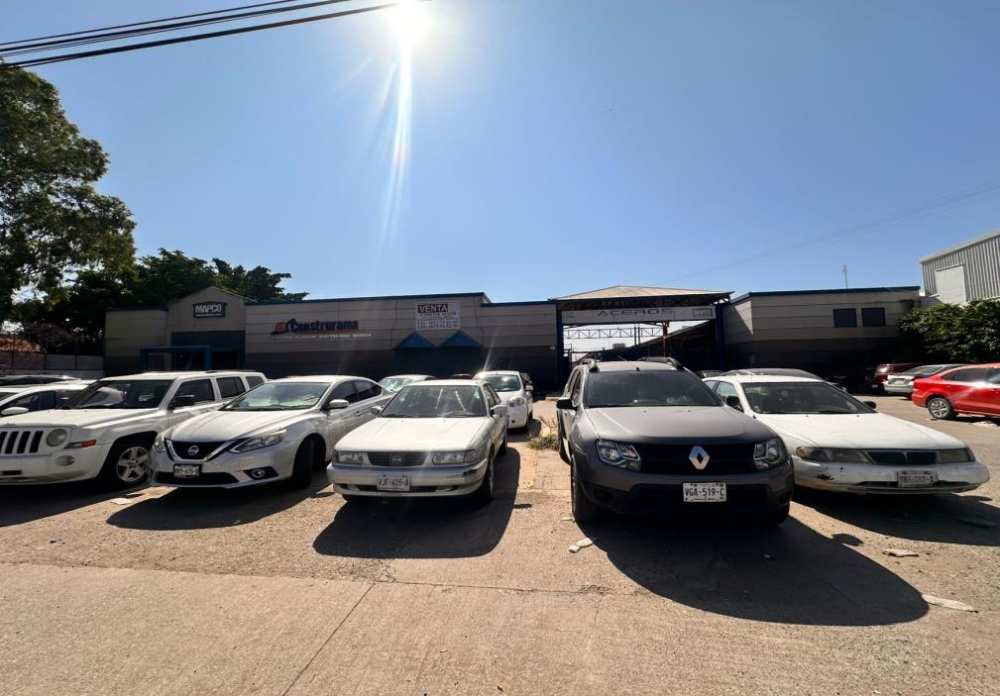

AvailableLand & Commercial Asset — Blvd. Emiliano Zapata, Culiacán
Culiacán, Sinaloa
10,248.70 m² land (2,434.54 m² built) · Sale
View details →Industrial land
Klarock identifies and markets industrial land across Mexico's key corridors and supports the full decision: site selection, feasibility assessment (land use, utilities and regulations), negotiation and, if needed, custom development. Part of the inventory is handled off-market.
Off-market
non-public inventory
5
industrial corridors
Feasibility
assessment first
Build to suit
custom development

AvailableCuliacán, Sinaloa
10,248.70 m² land (2,434.54 m² built) · Sale
View details → Available
AvailableTijuana, Baja California
38 hectáreas (380,000 m²) · Sale
View details →Land use and zoning: confirm that the urban development program allows your industrial use and obtain the corresponding certificate or assessment.
Utility feasibility: water and sewer with the local operator, electricity with CFE (capacity and timing), and gas or telecom if your process needs them.
Access and infrastructure: connection to highways, proximity to customs, ports or consumer centers, and road quality for trailers.
Ownership regime: verify clean title and distinguish private property from social or ejido land, which requires additional steps before it can be sold.
Soil and environmental conditions: geotechnical studies, hazards, environmental impact and local restrictions.
Industrial park or standalone lot: a park offers infrastructure, security and defined rules; a standalone lot offers flexibility and cost, but requires managing more permits.
We run the feasibility pre-assessment before you commit capital: land use, utilities and applicable regulations. We also coordinate with state governments on incentives, manage permits and structure the transaction (purchase, sale-leaseback or investment structures).
Current land use, water, sewer and power feasibility, access, ownership regime and title, soil studies and environmental restrictions. A feasibility pre-assessment helps rule out risks before you invest.
It is the zoning that the urban development program assigns to a parcel and that determines whether industrial activities may operate on it. It is evidenced by the land-use certificate issued by the municipal authority.
It depends on your operation. A park offers infrastructure, security and rules; a standalone lot gives more design flexibility and lower cost but requires managing more permits and utilities yourself.
Part of the inventory is off-market. Tell us your requirement (size, corridor, utilities) and a managing partner will propose options. We currently publish a lot in Culiacán zoned as a regional and mixed industrial corridor and a 38-hectare site in Tijuana–Rosarito suited for commercial, industrial or residential use, subject to land use and utility feasibility.
Yes. We develop build-to-suit projects and support you from site selection through operation.
You can also see industrial buildings in mexico.
Reach out and a managing partner will contact you within 24 business hours.
Contact a Managing Partner